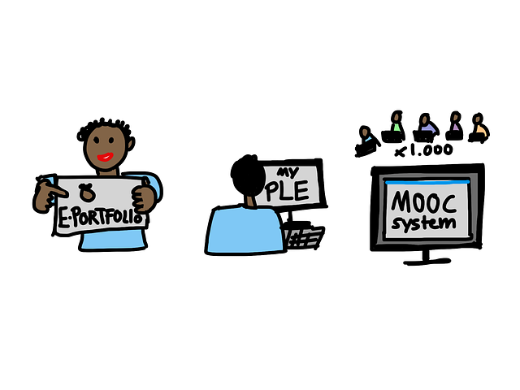

A projektemről röviden, avagy HTMLgetés
Jelen weboldalt a Codecool programozóiskola egyik, egyéni forrásfelkutatásra és ismeretelsajátításra épülő projektjének keretein belül hoztam létre.
A főbb formai és tartalmi követelmények adottak voltak, pl. HTML, CSS és JavaScript használata, az aloldalak száma és tartalma, W3C validáció, Git verziókezelő rendszer használata, stb.

Elsajátított webes alapismeretek
...azaz egy újszülöttnek minden vicc új:
- HTML5
- CSS3
- JavaScript
"Csak tiszta forrásból"
Bartók Béla Cantata Profanajának zárógondolatához híven következzen a felhasznált anyagok listája.
- Steven Suehring - Janet Valade: PHP, MySQL, JavaScript & HTML 5
- W3Schools
- The W3C Markup Validation Service
- StandardsMode: HTML és CSS oktatás ingyenesen
- Németh Attila: Reszponzív weboldal készítés CSS keretrendszer segítségével
- Szabadon felhasználható képek a Pixabay-ról
- Ingyenes háttér-textúrák a DeMilked-ről